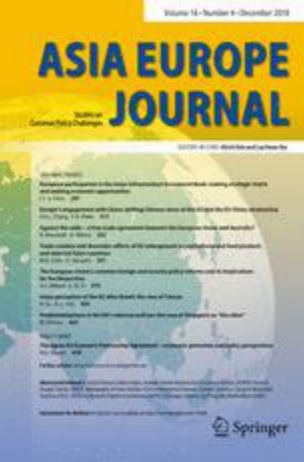

收录于合集

简 介
**
**
【 作者简介 】
Bhavna Dave, Yuka Kobayashi ， 任职于伦敦大学亚非学院(SOAS University of London)
【文章来源】
Asia Europe Journal，September 2018, Volume 16, Issue 3, pp267-281
【期刊介绍】
**
**

Asia Europe Journal 为每季度出版的学术期刊，主要关注亚洲及欧洲相关事务。
【 整理 】高嘉琳
【 审核 】庞林立
【 提纲 】
摘要
引言
中亚国家对丝绸之路经济带的看法
中国在中亚的承诺与投资状况
中国投资的安全化转变
中亚精英如何调解民众焦虑
结论
摘 要
中国领导人习近平于2013年发表的丝绸之路经济带(The Silk Road Economic Belt, SREB)，作为一带一路(Belt and Road Initiative, BRI)针对中亚地区的规划，被视为是以贸易、基础建设为核心，进而促进地区稳定的倡议。在整合经济投资、安全网络建构的同时，加强中亚、南亚地区与中国的联系，以期将安全网络、经济、运输走廊往西向欧洲推进。本文将检视中国于中亚地区的投资行为、安全网络的状况，并从三个面向探究中国所提出的一带一路/丝绸之路经济带(BRI/SREB)的内涵：中国丝绸之路经济带(SREB)投资行为对于中亚地区国家的诱因；地区安全议题对于中亚地区国家政权及中国意义；中亚地区国家菁英及民众对中国投资行为的不同态度，在探讨对于中国所提出之丝绸之路经济带(SREB)正向影响的同时关注各界不同的反应。本文以列举中国在愈趋涉入中亚地区经济、安全议题的状况下，探讨与俄罗斯、欧盟互动变化及可能的启示。
** ** ** ** ** ** 引言************
中亚地区不仅在民族、宗教俩面向与新疆部分地区具有相似性，领土亦有接壤，商业、贸易亦频繁，因此对于中国对外政策具有特殊意义。自1990年代起，北京为减缓分离主义情绪，便致力于新疆的工业发展，其经济的持续成长、与中亚地区的贸易伙伴关系，以及上海合作组织(Shanghai Cooperation Organization, SCO)的成立，使中国在中亚地区的经济、政治影响力得以逐渐提升，且安全网络(arc of security)亦可向西、往中亚地区扩张，更进而拓展至阿富汗。中国领导人习近平于2013年发表的丝绸之路经济带(The Silk Road Economic Belt, SREB)，作为一带一路(Belt and Road Initiative, BRI)针对中亚地区的规划，在巩固中国现有投资及安全网络的同时，亦加强中国与中亚、南亚地区的互动网络，并发展和欧洲间的经济、运输走廊。
衔接此段，本文作者分别提出一带一路英文翻译名称于2013、2014及2015的转变，后剖析一带一路的愿景，并针对一带一路作简要介绍。
随后，本文作者指出有许多关于中国对中亚地区是否有战略计划的争论：如Kerr于所提出的“战略地区主义”观点；以及相左观点，由Zhao指出其认为中国政府的政策在战略层面上较缺乏延续性，也对一带一路的作较细部的解释，试图厘清一带一路对于中国的可能意义，更提出3点有关地区安全促进的目的。进入另一段，本文作者又就中国官方对于一带一路的观点、声明的内容做介绍。
最后，本文作者就前述为基础，重点探讨中国在中亚规划的三个方面：
一、中国方面于丝绸之路经济带(SREB)的大量投资对中亚地区国家的吸引力；
二、地区安全对于中亚地区国家权力巩固及中国于当地事务角色的影响；
三、精英阶层分别对于中国投资及中国势力壮大态度的矛盾；
总结来说，本文将列举中国于中亚地区在经济、地区安全、及中俄伙伴关系等议题对于前景可能带来的启示。
** ** ** ** ** ** 中亚国家对丝绸之路经济带的看法************
本文作者在此段针对各界对于丝绸之路经济带(SREB)的看法及反应稍作探究，大致分为三个部分：
一、在开头本文作者以Millward于2009年对于新疆地位的看法为引，代入与当代丝绸之路经济带之间意义、内涵差异的讨论。根据本文作者就古代丝路以及当代丝路所作比较，古代丝路是以新疆地区为枢纽，将中亚地区串联整合；而当代丝路则较倾向以中国为中心，以新疆为起点，建立至欧洲地区的交通、贸易走廊。
二、本文作者对于一带一路/丝绸之路经济带(BRI/SREB)串联新疆、中亚以及南亚地区方式的讨论。在这个部分，本文作者以两面向检视一带一路/丝绸之路经济带(BRI/SREB)的执行现况：(1)与中国–哈萨克斯坦国家边界相邻之霍尔果斯(Khorgos)自由贸易经济区作为中国商品转运至中东、欧洲、非洲枢纽的意义；(2)中国–巴基斯坦经济走廊(China Pakistan Economic Corridor, CPEC)，起于中国新疆喀什地区，向南至巴基斯坦，贯穿塔吉克斯坦国家边境地区及部分印巴边境，并于阿拉伯海(Asiabian sea)的瓜达尔(Gwadar)港为止。
三、探究几个中亚地区国家对于丝绸之路经济带(SREB)的看法及反应，并就特定国家、地区情况稍作讨论。此部分，本文作者提及Nazarbaev就丝绸之路经济带(SREB)承诺将投资90亿美金于铁路及其他基础建设项目。总体而言，哈萨克斯坦对于丝绸之路经济带(SREB)呈现正面态度；相对于哈萨克斯坦对此倡议的态度，乌兹别克斯坦及土库曼斯坦虽然已就铁路及输油管建设项目中国建立双边合作，但对于开放外资进入仍抱持较谨慎的态度。
** ** ** ** ** ** 中国在中亚的承诺与投资状况************
本文作者在此段探究中国于中亚地区的投资状况，大致分为五个部分：
一、本文作者以Kobayashi and Sanchez于2017年、SIC于2017年、ADB于2012年个别提出的论调，就中国过去至今对外投资的情形略作叙述。大致而言，中国在对外投资、建设的项目皆维持叫稳定的低费用状况，特别是于非洲地区的情形，因此在对外协助、投资的行为上大致都收获正向的支持声浪。本文作者以此为引，就中国于中亚地区的投资做出简要讨论。
二、以Eurasianet、Putz分别于2015年提出的论调为参考，就中国对吉尔吉斯斯坦、乌兹别克斯坦的投资情形、反应作讨论。本文作者指出，至今中国于其国内所建设的项目已协助串联吉尔吉斯斯坦南、北部受高山地形限制的地区，此成就使吉尔吉斯斯坦无须再仰赖乌兹别克斯坦协助运输，省下每年8–9百万美金的费用。此外，中国–吉尔吉斯斯坦–乌兹别克斯坦铁路建设预期将花费5–6十亿美金，起于中国新疆，途经吉尔吉斯斯坦北部以衔接至乌兹别克斯坦。
三、以Asia Plus、Ferghana News分别于2017年提出的论调为参考，探究中国对塔吉克斯坦投资情形及其领导人Rahmon对此看法。本文作者指出，塔吉克斯坦总统期望中国对其国内基础建设的投资，使塔吉克斯坦成为中国与中亚地区其他国家的枢纽。
四、就中国投资对于中亚地区国家产生之效益，以及对于当地国家带来之负面影响的讨论。本文作者提及，乍看之下，中国与中亚地区的投资看似以提高当地基础建设，使所有人皆的受益为目标。然而，实际上来说，在没有针对建设成本后续处理程序的讨论下，大量中国投资的进入，已快速提高塔吉克斯坦及吉尔吉斯斯坦的外债金额。
五、以Lelyveld于2017年提出的论调为参考，就中国已建设、尚未建设的项目做出讨论。作者指出，并非所有中国提出的方案皆能如期完成，有许多项目正处于无限延期的状况，特别是某些对中国而言没有经济效益的项目，这些拖延会导致中亚国家格局发生改变，从而产生对中国的疑虑。
** ** ** ** ** ** 中国投资的安全化转变************
本文作者在此段探究中国对中亚地区投资及地区安全议题的相关性，大致分为三部分：
一、以Kerr和Swinton于2008年、Cooley于2012年、Windsor于2012年、MOFA于2004年分别提出的论调为参考，将新疆安全议题及中国对中亚地区的投资之间关联性作出讨论，亦提及上海合作组织(SCO)的架构于此状况中扮演的角色。本文作者认为，对于中国政府而言，新疆维吾尔地区分离主义、恐怖主义、宗教极端主义三邪恶势力(three evil forces)的起因为地区偏远、且经济发展成果不彰，因此便注入大量投资以其促进当地发展；亦提及于上海合作组织(SCO)的框架之下，成员国必须就打击前述势力达成合作。
二、本文作者指出，一带一路/丝绸之路经济带(BRI/SREB)以地区经贸连接为基础，期望得更进一步推动于地区安全议题上的进展。以诸多文献资料为例，如：Rashid于2017年、Shahbazov于2017年、Nasar和Haand于2016年等人分别提出的论调），针对个别地区提出较细节的讨论。本文作者提到上海合作组织(SCO)随着印度、巴基斯坦的加入使分布范围扩大，上海合作组织(SCO)对于地区性安全议题或有可能提高关注以打击跨境恐怖主义及极端伊斯兰教思想、行为的散播；后就中国对个别地区投资与安全议题的关联性略作探究，分别有：塔吉克斯坦、阿富汗等地。
三、以Defense Tube、Chan、OSCE于2017年分别提出的论调为参考，提出中国人民解放军至今于中亚各地的行动与地区安全议题间关联、情势的讨论。本文作者指出，自2016年中国人民解放军便有协助守卫其项目地区的行为；也提及中国于吉布提(Djibouti)、瓜达尔(Gwadar)建立其海军基地等事件。而这个部分末以中国与中亚地区国家于安全议题上的现况与其诠释作结。
** ** ** ** ** ** 中亚精英如何调解民众焦虑************
本文作者在此段探究中亚地区统治精英及人民对于中国投资行为的看法，大致分为三部分：
一、以Brautigam于2011年提出的论调为参考，就中亚各国对统治精英接受中国投资的舆情略作讨论。本文作者指出，大致来说，鉴于中国于非洲的投资状况、成果，中亚地区国家统治精英对于中国对内投资保持欢迎态度，然而他们必须面对国内反对群体将中国行为视作扩张的敏感情绪做出反应。
二、以Lelik于2016年、Hofman于2016年、Lewis于2008、RFE/RL于2013分别提出的论调为参考，就反对中国投资、恐中(Sinophobia)情绪的例子作讨论，如发生于哈萨克斯坦、吉尔吉斯斯坦等地对于中国所提出之政策的抗议行动。后针对哈萨克斯坦、吉尔吉斯斯坦、塔吉克斯坦的情形做较深入讨论。本文作者提出，于中国控住下的工厂、建设，爆发数起抗议，诉求包含中国不雇佣当地劳工、提供薪资不合理、工作条件不佳等问题。而后作者就发生于吉尔吉斯斯坦、哈萨克斯坦就土地租赁问题所爆发抗议，及塔吉克斯坦基于和俄罗斯、中国之间的关系，对土地租赁态度作出较为细部的讨论。
三、以Javed于2017年、EBRD于2016年分别提出的论调为参考，就中国投资对于中亚地区国家带来的效益、产生的顾虑作讨论；并对于中国投资行为对于中亚地区政经格局造成的影响作解释。总结来说，中国对中亚地区国家的投资对于其领导人具有相当的吸引力，唯投资项目对于国家外债、经济、安全等议题上的可能影响亦引起中亚地区国家国内对于中国投资行为的疑虑。
** ** ** ** ** ** 结论************
本文主要探讨的内容是中国于中亚地区投资行为及各界反应。
本文作者引用数篇文献资料，整合各界对于中国于中亚地区政策规划的诠释，以及中国与俄罗斯、欧盟等各界的互动，并就未来各方合作的可能、愿景作整合、讨论。作者分别就中国领导人习近平的表态，丝绸之路经济带(SREB)、欧亚经济联盟(EEU)等机构，以及中国与俄罗斯、欧盟的合作、互动关系的讨论作结。
点击“ 阅读原文 **** ”可获取原文pdf版
声明
此文为国政学人微信公众平台外文编译系列文章之一，由国政学人编辑首发，不代表本平台观点。欢迎转发分享，未经授权谢绝转载。如有问题，请联系guozhengxueren@163.com
更多阅读
国政学人 （ID：guozhengxueren)
为方便学人及时阅读高质量文章
别忘把国政学人设置 星标 哦~